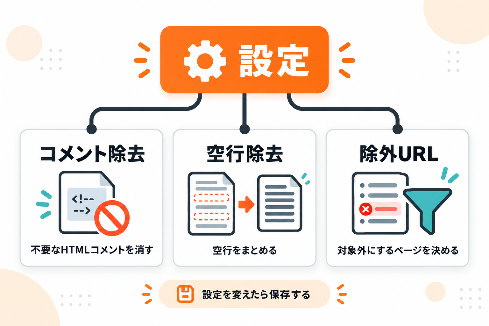
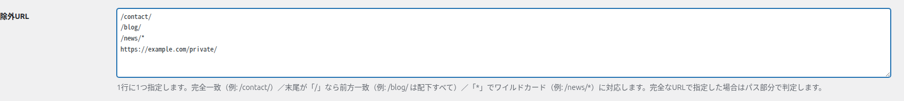
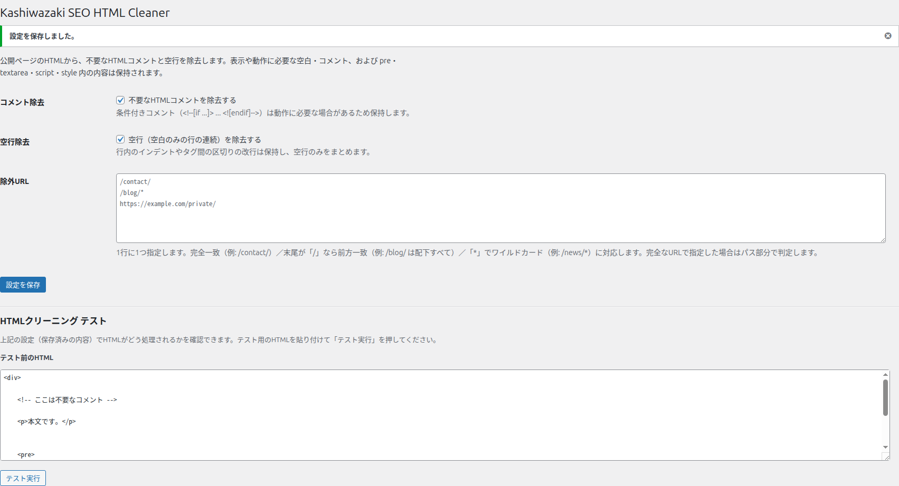

設定画面の使い方
公開ページから何を取り除くか、どのページを対象外にするかを設定します。
設定画面には、コメント除去・空行除去・除外URLの3つの設定と、設定を保存ボタンがあります。画面の下部には、設定どおりに処理されるかを試せるHTMLクリーニング テストがあります。
3つの設定の関係

画面の地図

| 番号 | 項目 | 内容 |
|---|---|---|
| ① | コメント除去 | 不要なHTMLコメントを除去するかを切り替えます。 |
| ② | 空行除去 | 空行をまとめるかを切り替えます。 |
| ③ | 除外URL | クリーニングしないページを指定します。 |
| ④ | 設定を保存 | 設定を保存します。 |
| ⑤ | HTMLクリーニング テスト | 設定どおりに処理されるかを試せます（別ページで説明）。 |
① コメント除去
何をするものか: 公開ページのHTMLから、表示に使われないHTMLコメントを取り除くかどうかを切り替えます。
いつ使うか: ソースに残った不要なコメント（テーマやプラグインが残した説明コメントなど）を消して、HTMLを軽く・読みやすくしたいときはONのままにします。コメントを残したい事情があるときはOFFにします。
操作手順:
「不要なHTMLコメントを除去する」のチェックを、ON（チェックあり）またはOFF（チェックなし）にします。
画面下部の「設定を保存」をクリックします。
公開ページを再読み込みして、ソースからコメントが消えていることを確認します。
| 選択肢 | 結果 |
|---|---|
| チェックあり（ON） | 公開ページの不要なHTMLコメントを除去します。動作に必要な条件付きコメントは残します。 |
| チェックなし（OFF） | コメントはそのまま残します。 |
既定値: ON（チェックあり）。
画面の説明: 条件付きコメント（<!--[if ...]> ... <![endif]-->）は動作に必要な場合があるため保持します。
条件付きコメントは残します。 ONにしていても、条件付きコメントは保持されます。
② 空行除去
何をするものか: 空白だけの行が続く「空行」を1つにまとめるかどうかを切り替えます。
いつ使うか: ソースに空行が多く、見通しを良くしたいときにONにします。
操作手順:
「空行（空白のみの行の連続）を除去する」のチェックを、ONまたはOFFにします。
「設定を保存」をクリックします。
公開ページを再読み込みして確認します。
画面の説明: 行内のインデントやタグ間の区切りの改行は保持し、空行のみをまとめます。
| 選択肢 | 結果 |
|---|---|
| チェックあり（ON） | 空行を1つの改行にまとめます。行内のインデントや、タグの区切りとしての改行は残します。 |
| チェックなし（OFF） | 空行はそのまま残します。 |
既定値: ON（チェックあり）。
注意: pre タグの中は、空行も含めて一切変更しません。コード表示やスクリプトの中身が変わることはありません。
③ 除外URL
何をするものか: クリーニングを行わないページのURLを指定します。ここに書いたURLでは、コメント除去も空行除去も行いません。
いつ使うか: 特定のページだけ表示が変わってしまうときに、そのページを対象外にしたいとき。
操作手順:
「除外URL」の欄に、対象外にするURLを1行に1つ入力します。
「設定を保存」をクリックします。
そのページを開いて、クリーニングされていないことを確認します。

画面の説明: 1行に1つ指定します。完全一致（例: /contact/）／末尾が「/」なら前方一致（例: /blog/ は配下すべて）／「*」でワイルドカード（例: /news/*）に対応します。完全なURLで指定した場合はパス部分で判定します。
指定方法（4通り）:
| 指定方法 | 書き方の例 | 意味 |
|---|---|---|
| 完全一致 | /contact/ | その URL だけを対象外にします（末尾のスラッシュの有無は同じものとして扱います）。 |
| 前方一致 | /blog/ | 末尾を「/」にすると、その配下すべて（/blog/、/blog/2026/ …）を対象外にします。 |
| ワイルドカード | /news/* | * の部分は任意の文字に一致します。 |
| 完全なURL | https://example.com/private/ | 完全なURLで書いた場合は、そのパス部分で判定します。 |
既定値: 空欄（除外するページなし）。
ホームページだけを除外したいとき: / と1行だけ書きます。これはトップページ（/）だけを対象外にし、配下のページには影響しません。
確認方法: 除外できているかは、そのページを開いてソースを見るのが確実です。除外したページでは、コメントや空行がそのまま残っています。
④ 設定を保存
何をするものか: ①〜③の内容を保存します。
操作手順:
「設定を保存」をクリックします。
画面の上部に緑の通知「設定を保存しました。」が出れば保存完了です。

注意: チェックを変えただけでは保存されません。必ず「設定を保存」をクリックしてください。保存しないまま移動すると、変更は元に戻ります。
この画面で表示されるメッセージ
| メッセージ | 意味と対処 |
|---|---|
| 設定を保存しました。 | 設定の保存に成功しました。公開ページに反映されます。 |
| セキュリティチェックに失敗しました。もう一度お試しください。 | 保存の操作が無効になっていました。ページを再読み込みして、もう一度「設定を保存」を押してください。 |
目的別の使い方の例
まず全体を軽くしたい … 既定（両方ON）のまま「設定を保存」。
コメントは残したい … 「コメント除去」をOFFにして保存。
特定のページだけ除外したい … 「除外URL」にそのURLを1行追加して保存。
処理結果を先に見たい … HTMLクリーニング テストを使います。